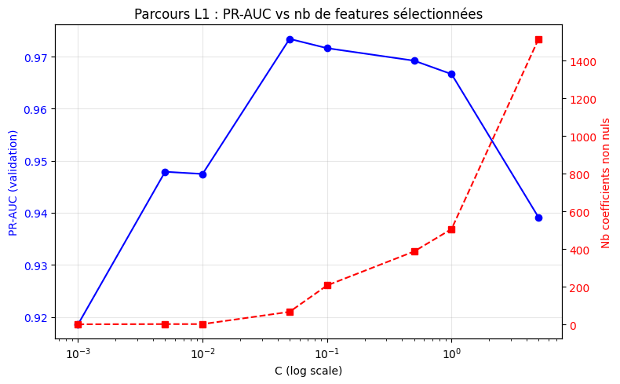
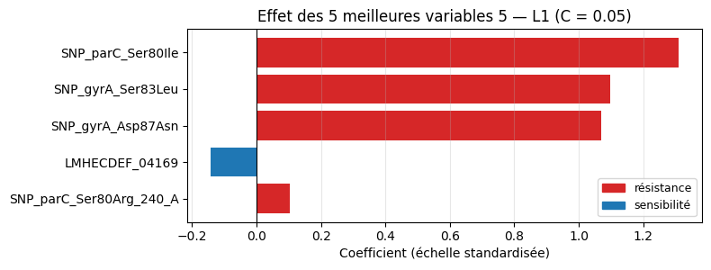
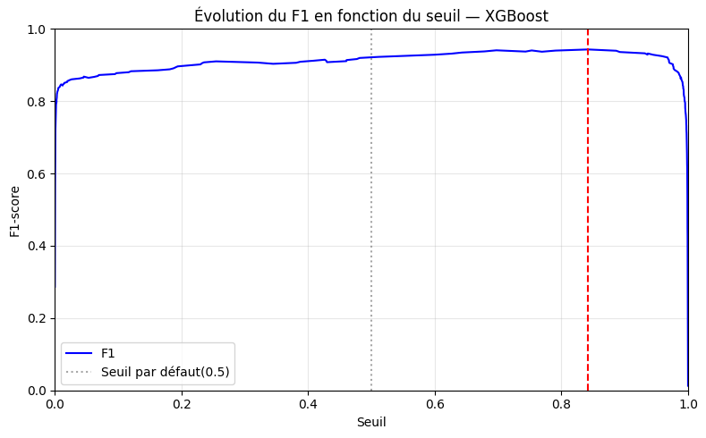
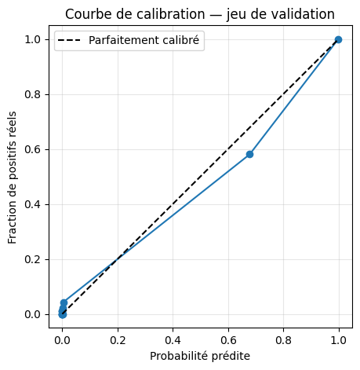
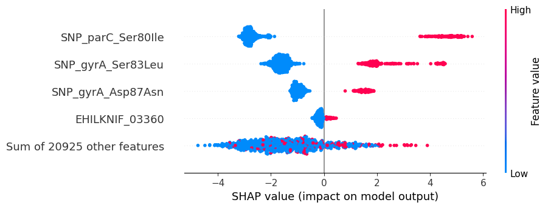
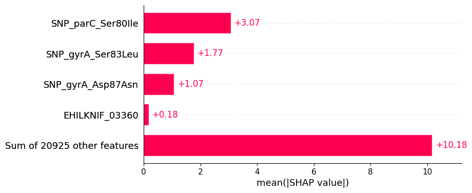
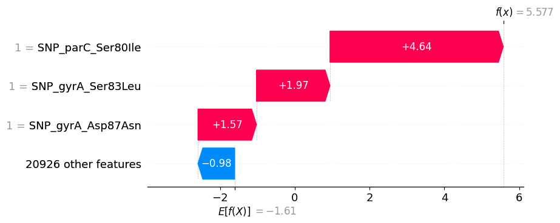
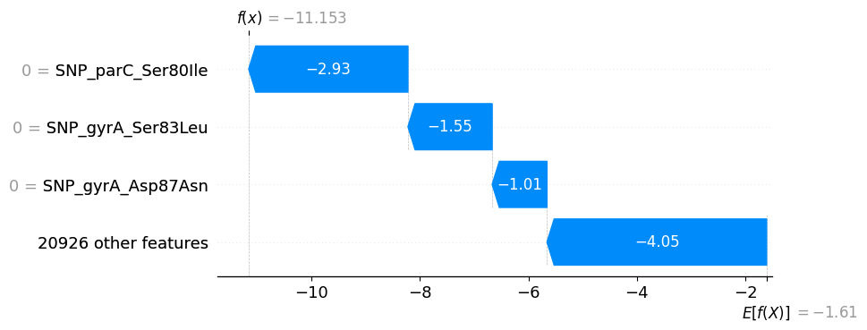
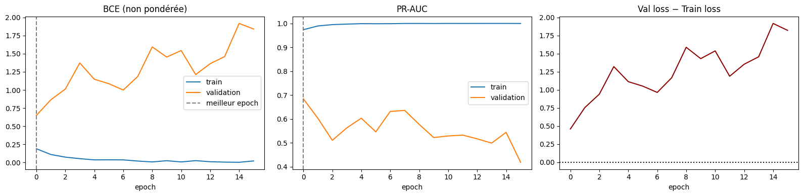
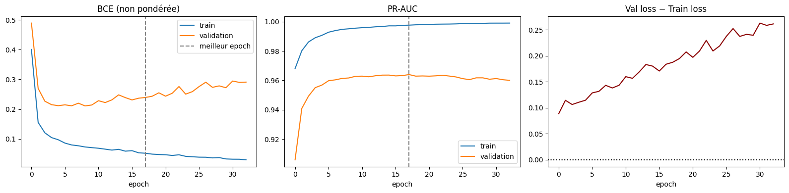

import copy
from matplotlib.patches import Patch
import shap
import pandas as pd
import numpy as np
import matplotlib.pyplot as plt
import seaborn as sns
from xgboost import XGBClassifier
import torch
from torch import nn
from torch.utils.data import TensorDataset, DataLoader
from pathlib import Path
from sklearn.linear_model import LogisticRegression
from sklearn.ensemble import RandomForestClassifier
from sklearn.calibration import calibration_curve
from sklearn.preprocessing import StandardScaler
from sklearn.pipeline import Pipeline
from sklearn.metrics import (
accuracy_score, balanced_accuracy_score,
precision_score, recall_score, f1_score,
roc_auc_score, average_precision_score,
precision_recall_curve, confusion_matrix,
)
# on évite les conflist entre les packagese
torch.set_num_threads(1)
# on configure la graine
SEED = 123
# on modifie les paramètres de la sortie
sns.set_theme(style="whitegrid", context="notebook")
pd.set_option("display.max_columns", 100)
pd.set_option("display.width", 160)Exploration du jeu de données : Escherichia coli - Ciprofloxacine
1. Importation du jeu de données
1.1 Importation des données complète
# Définition du chemin relatif
data_path = Path("../data/processed/ecoli_ciprofloxacin_snp.parquet")
if not data_path.exists():
data_path = Path("data/processed/ecoli_ciprofloxacin_snp.parquet")
# importation des données
df = pd.read_parquet(data_path)
print(f"Jeu de données chargé : {df.shape[0]:,} lignes et {df.shape[1]:,} colonnes.")Jeu de données chargé : 5,935 lignes et 20,933 colonnes.1.2 Importation des données splits
# On écrit le chemin du jeu de données
DATA = Path("../data/splits_snp_3way")
if not DATA.exists():
DATA = Path("data/splits_snp_3way")
# On importe les données splits
X_train = pd.read_parquet(DATA / "X_train.parquet")
y_train = pd.read_parquet(DATA / "y_train.parquet")["y"]
X_val = pd.read_parquet(DATA / "X_val.parquet")
y_val = pd.read_parquet(DATA / "y_val.parquet")["y"]
X_test = pd.read_parquet(DATA / "X_test.parquet")
y_test = pd.read_parquet(DATA / "y_test.parquet")["y"]
# on affiche les tailles des données d'entraînement
print(X_train.shape)
print(X_val.shape)
print(X_test.shape)(4074, 20929)
(932, 20929)
(929, 20929)1.3 Fonction d’évaluation des modèles
def evaluate(name, model, X, y, threshold = 0.5) :
proba = model.predict_proba(X)[:,1]
pred = (proba >= threshold).astype(int)
# métriques stockées pour le tableau comparatif
metrics = {
"model": name,
"accuracy": accuracy_score(y, pred),
"balanced_acc": balanced_accuracy_score(y, pred),
"precision": precision_score(y, pred, zero_division=0),
"recall": recall_score(y, pred, zero_division=0),
"f1": f1_score(y, pred, zero_division=0),
"roc_auc": roc_auc_score(y, proba),
"pr_auc": average_precision_score(y, proba),
}
print(f"\n=== {name} (seuil = {threshold}) ===")
print(f"Accuracy : {accuracy_score(y, pred):.3f}")
print(f"Balanced accuracy : {balanced_accuracy_score(y, pred):.3f}")
print(f"Precision : {precision_score(y, pred, zero_division=0):.3f}")
print(f"Recall : {recall_score(y, pred, zero_division=0):.3f}")
print(f"F1 : {f1_score(y, pred, zero_division=0):.3f}")
print(f"ROC-AUC : {roc_auc_score(y, proba):.3f}")
print(f"PR-AUC : {average_precision_score(y, proba):.3f}")
print(pd.DataFrame(
confusion_matrix(y, pred),
index = ["Observé 0", "Observé 1"],
columns = ["Prédit 0", "Prédit 1"]
))
return metrics2. Machine learning
2.1 Régression logistique
2.1.1 Régression logistique classique
# on construit le modèle
model_lr = LogisticRegression(
random_state = 42,
max_iter = 2000
)
# entraînement du modèle
model_lr.fit(X_train, y_train)
# évaluation du modèle
evaluate("Régression logistique — validation", model_lr, X_val, y_val)
=== Régression logistique — validation (seuil = 0.5) ===
Accuracy : 0.845
Balanced accuracy : 0.633
Precision : 0.570
Recall : 0.314
F1 : 0.405
ROC-AUC : 0.844
PR-AUC : 0.554
Prédit 0 Prédit 1
Observé 0 739 37
Observé 1 107 49{'model': 'Régression logistique — validation',
'accuracy': 0.8454935622317596,
'balanced_acc': 0.633211075865715,
'precision': 0.5697674418604651,
'recall': 0.3141025641025641,
'f1': 0.4049586776859504,
'roc_auc': 0.8435187020882896,
'pr_auc': 0.5537802741049868}2.1.2 Régression logistique pénalisé
# on met en place une pénalisation LASSO
model_lr_l1 = Pipeline([
("scaler", StandardScaler()),
("clf", LogisticRegression(
penalty = "l1",
solver = "liblinear",
C = 0.1,
max_iter = 5000,
random_state= 42,
)),
])
# on fait entraîner le modèle
model_lr_l1.fit(X_train, y_train)
res_l1 = evaluate("Régression logostique L1 (LASSO) - validation",
model_lr_l1, X_val, y_val)/Users/hin.benjamin/.pyenv/versions/3.12.4/lib/python3.12/site-packages/sklearn/linear_model/_logistic.py:1135: FutureWarning: 'penalty' was deprecated in version 1.8 and will be removed in 1.10. To avoid this warning, leave 'penalty' set to its default value and use 'l1_ratio' or 'C' instead. Use l1_ratio=0 instead of penalty='l2', l1_ratio=1 instead of penalty='l1', and C=np.inf instead of penalty=None.
warnings.warn(
/Users/hin.benjamin/.pyenv/versions/3.12.4/lib/python3.12/site-packages/sklearn/linear_model/_logistic.py:1160: UserWarning: Inconsistent values: penalty=l1 with l1_ratio=0.0. penalty is deprecated. Please use l1_ratio only.
warnings.warn(
=== Régression logostique L1 (LASSO) - validation (seuil = 0.5) ===
Accuracy : 0.973
Balanced accuracy : 0.948
Precision : 0.928
Recall : 0.910
F1 : 0.919
ROC-AUC : 0.987
PR-AUC : 0.972
Prédit 0 Prédit 1
Observé 0 765 11
Observé 1 14 142# On stocke pour chaque coefficient de pénalisation le modèle et ses performances assoociés
C_values = [0.001, 0.005, 0.01, 0.05, 0.1, 0.5, 1.0, 5.0]
models_l1 = {}
rows_l1 = []
for C in C_values:
pipe = Pipeline([
("scaler", StandardScaler()),
("clf", LogisticRegression(
penalty="l1", solver="liblinear",
C=C, max_iter=5000, random_state=42,
)),
])
pipe.fit(X_train, y_train)
m = evaluate(f"LR-L1 C={C}", pipe, X_val, y_val)
m["C"] = C
m["n_features"] = int((pipe.named_steps["clf"].coef_.ravel() != 0).sum())
models_l1[C] = pipe
rows_l1.append(m)
comparison_l1 = pd.DataFrame(rows_l1).set_index("model")
# on prend le modèle pour lequel la PR_AUC est la plus élévée
best_C = comparison_l1.loc[comparison_l1["pr_auc"].idxmax(), "C"]
print(f"C retenu (PR-AUC max) : {best_C}")
best_pipe = models_l1[best_C]
coefs = best_pipe.named_steps["clf"].coef_.ravel()
# on extrait les features ayant un coefficient non nul
selected = pd.DataFrame({
"feature" : X_train.columns,
"coef" : coefs,
"abs_coef": np.abs(coefs),
})
selected = (selected[selected["coef"] != 0]
.sort_values("abs_coef", ascending=False)
.reset_index(drop=True))
print(f"{len(selected)} features sélectionnées sur {len(coefs)} "
f"({100 * len(selected) / len(coefs):.2f}%)")
selected.head(30)/Users/hin.benjamin/.pyenv/versions/3.12.4/lib/python3.12/site-packages/sklearn/linear_model/_logistic.py:1135: FutureWarning: 'penalty' was deprecated in version 1.8 and will be removed in 1.10. To avoid this warning, leave 'penalty' set to its default value and use 'l1_ratio' or 'C' instead. Use l1_ratio=0 instead of penalty='l2', l1_ratio=1 instead of penalty='l1', and C=np.inf instead of penalty=None.
warnings.warn(
/Users/hin.benjamin/.pyenv/versions/3.12.4/lib/python3.12/site-packages/sklearn/linear_model/_logistic.py:1160: UserWarning: Inconsistent values: penalty=l1 with l1_ratio=0.0. penalty is deprecated. Please use l1_ratio only.
warnings.warn(
=== LR-L1 C=0.001 (seuil = 0.5) ===
Accuracy : 0.977
Balanced accuracy : 0.940
Precision : 0.979
Recall : 0.885
F1 : 0.929
ROC-AUC : 0.952
PR-AUC : 0.919
Prédit 0 Prédit 1
Observé 0 773 3
Observé 1 18 138/Users/hin.benjamin/.pyenv/versions/3.12.4/lib/python3.12/site-packages/sklearn/linear_model/_logistic.py:1135: FutureWarning: 'penalty' was deprecated in version 1.8 and will be removed in 1.10. To avoid this warning, leave 'penalty' set to its default value and use 'l1_ratio' or 'C' instead. Use l1_ratio=0 instead of penalty='l2', l1_ratio=1 instead of penalty='l1', and C=np.inf instead of penalty=None.
warnings.warn(
/Users/hin.benjamin/.pyenv/versions/3.12.4/lib/python3.12/site-packages/sklearn/linear_model/_logistic.py:1160: UserWarning: Inconsistent values: penalty=l1 with l1_ratio=0.0. penalty is deprecated. Please use l1_ratio only.
warnings.warn(
=== LR-L1 C=0.005 (seuil = 0.5) ===
Accuracy : 0.981
Balanced accuracy : 0.950
Precision : 0.979
Recall : 0.904
F1 : 0.940
ROC-AUC : 0.974
PR-AUC : 0.948
Prédit 0 Prédit 1
Observé 0 773 3
Observé 1 15 141/Users/hin.benjamin/.pyenv/versions/3.12.4/lib/python3.12/site-packages/sklearn/linear_model/_logistic.py:1135: FutureWarning: 'penalty' was deprecated in version 1.8 and will be removed in 1.10. To avoid this warning, leave 'penalty' set to its default value and use 'l1_ratio' or 'C' instead. Use l1_ratio=0 instead of penalty='l2', l1_ratio=1 instead of penalty='l1', and C=np.inf instead of penalty=None.
warnings.warn(
/Users/hin.benjamin/.pyenv/versions/3.12.4/lib/python3.12/site-packages/sklearn/linear_model/_logistic.py:1160: UserWarning: Inconsistent values: penalty=l1 with l1_ratio=0.0. penalty is deprecated. Please use l1_ratio only.
warnings.warn(
=== LR-L1 C=0.01 (seuil = 0.5) ===
Accuracy : 0.981
Balanced accuracy : 0.950
Precision : 0.979
Recall : 0.904
F1 : 0.940
ROC-AUC : 0.974
PR-AUC : 0.947
Prédit 0 Prédit 1
Observé 0 773 3
Observé 1 15 141/Users/hin.benjamin/.pyenv/versions/3.12.4/lib/python3.12/site-packages/sklearn/linear_model/_logistic.py:1135: FutureWarning: 'penalty' was deprecated in version 1.8 and will be removed in 1.10. To avoid this warning, leave 'penalty' set to its default value and use 'l1_ratio' or 'C' instead. Use l1_ratio=0 instead of penalty='l2', l1_ratio=1 instead of penalty='l1', and C=np.inf instead of penalty=None.
warnings.warn(
/Users/hin.benjamin/.pyenv/versions/3.12.4/lib/python3.12/site-packages/sklearn/linear_model/_logistic.py:1160: UserWarning: Inconsistent values: penalty=l1 with l1_ratio=0.0. penalty is deprecated. Please use l1_ratio only.
warnings.warn(
=== LR-L1 C=0.05 (seuil = 0.5) ===
Accuracy : 0.970
Balanced accuracy : 0.944
Precision : 0.916
Recall : 0.904
F1 : 0.910
ROC-AUC : 0.987
PR-AUC : 0.973
Prédit 0 Prédit 1
Observé 0 763 13
Observé 1 15 141/Users/hin.benjamin/.pyenv/versions/3.12.4/lib/python3.12/site-packages/sklearn/linear_model/_logistic.py:1135: FutureWarning: 'penalty' was deprecated in version 1.8 and will be removed in 1.10. To avoid this warning, leave 'penalty' set to its default value and use 'l1_ratio' or 'C' instead. Use l1_ratio=0 instead of penalty='l2', l1_ratio=1 instead of penalty='l1', and C=np.inf instead of penalty=None.
warnings.warn(
/Users/hin.benjamin/.pyenv/versions/3.12.4/lib/python3.12/site-packages/sklearn/linear_model/_logistic.py:1160: UserWarning: Inconsistent values: penalty=l1 with l1_ratio=0.0. penalty is deprecated. Please use l1_ratio only.
warnings.warn(
=== LR-L1 C=0.1 (seuil = 0.5) ===
Accuracy : 0.973
Balanced accuracy : 0.948
Precision : 0.928
Recall : 0.910
F1 : 0.919
ROC-AUC : 0.987
PR-AUC : 0.972
Prédit 0 Prédit 1
Observé 0 765 11
Observé 1 14 142/Users/hin.benjamin/.pyenv/versions/3.12.4/lib/python3.12/site-packages/sklearn/linear_model/_logistic.py:1135: FutureWarning: 'penalty' was deprecated in version 1.8 and will be removed in 1.10. To avoid this warning, leave 'penalty' set to its default value and use 'l1_ratio' or 'C' instead. Use l1_ratio=0 instead of penalty='l2', l1_ratio=1 instead of penalty='l1', and C=np.inf instead of penalty=None.
warnings.warn(
/Users/hin.benjamin/.pyenv/versions/3.12.4/lib/python3.12/site-packages/sklearn/linear_model/_logistic.py:1160: UserWarning: Inconsistent values: penalty=l1 with l1_ratio=0.0. penalty is deprecated. Please use l1_ratio only.
warnings.warn(
=== LR-L1 C=0.5 (seuil = 0.5) ===
Accuracy : 0.967
Balanced accuracy : 0.944
Precision : 0.893
Recall : 0.910
F1 : 0.902
ROC-AUC : 0.987
PR-AUC : 0.969
Prédit 0 Prédit 1
Observé 0 759 17
Observé 1 14 142/Users/hin.benjamin/.pyenv/versions/3.12.4/lib/python3.12/site-packages/sklearn/linear_model/_logistic.py:1135: FutureWarning: 'penalty' was deprecated in version 1.8 and will be removed in 1.10. To avoid this warning, leave 'penalty' set to its default value and use 'l1_ratio' or 'C' instead. Use l1_ratio=0 instead of penalty='l2', l1_ratio=1 instead of penalty='l1', and C=np.inf instead of penalty=None.
warnings.warn(
/Users/hin.benjamin/.pyenv/versions/3.12.4/lib/python3.12/site-packages/sklearn/linear_model/_logistic.py:1160: UserWarning: Inconsistent values: penalty=l1 with l1_ratio=0.0. penalty is deprecated. Please use l1_ratio only.
warnings.warn(
=== LR-L1 C=1.0 (seuil = 0.5) ===
Accuracy : 0.964
Balanced accuracy : 0.940
Precision : 0.881
Recall : 0.904
F1 : 0.892
ROC-AUC : 0.986
PR-AUC : 0.967
Prédit 0 Prédit 1
Observé 0 757 19
Observé 1 15 141/Users/hin.benjamin/.pyenv/versions/3.12.4/lib/python3.12/site-packages/sklearn/linear_model/_logistic.py:1135: FutureWarning: 'penalty' was deprecated in version 1.8 and will be removed in 1.10. To avoid this warning, leave 'penalty' set to its default value and use 'l1_ratio' or 'C' instead. Use l1_ratio=0 instead of penalty='l2', l1_ratio=1 instead of penalty='l1', and C=np.inf instead of penalty=None.
warnings.warn(
/Users/hin.benjamin/.pyenv/versions/3.12.4/lib/python3.12/site-packages/sklearn/linear_model/_logistic.py:1160: UserWarning: Inconsistent values: penalty=l1 with l1_ratio=0.0. penalty is deprecated. Please use l1_ratio only.
warnings.warn(
=== LR-L1 C=5.0 (seuil = 0.5) ===
Accuracy : 0.962
Balanced accuracy : 0.924
Precision : 0.906
Recall : 0.865
F1 : 0.885
ROC-AUC : 0.978
PR-AUC : 0.939
Prédit 0 Prédit 1
Observé 0 762 14
Observé 1 21 135
C retenu (PR-AUC max) : 0.05
68 features sélectionnées sur 20929 (0.32%)| feature | coef | abs_coef | |
|---|---|---|---|
| 0 | SNP_parC_Ser80Ile | 1.309811 | 1.309811 |
| 1 | SNP_gyrA_Ser83Leu | 1.097496 | 1.097496 |
| 2 | SNP_gyrA_Asp87Asn | 1.070255 | 1.070255 |
| 3 | LMHECDEF_04169 | -0.141049 | 0.141049 |
| 4 | SNP_parC_Ser80Arg_240_A | 0.104321 | 0.104321 |
| 5 | JEDMHCBK_04613 | -0.093898 | 0.093898 |
| 6 | Cluster_7924_+_+_GCA_003333785.1_ASM333378v1_+... | 0.085799 | 0.085799 |
| 7 | Cluster_6189_+_+_GCA_003333785.1_ASM333378v1_+... | 0.084402 | 0.084402 |
| 8 | SNP_soxR_Gly121Asp | -0.076349 | 0.076349 |
| 9 | IPMBBGLD_03156 | 0.072110 | 0.072110 |
| 10 | Cluster_6385_+_+_GCA_003334315.1_ASM333431v1_+... | -0.069807 | 0.069807 |
| 11 | SNP_gyrA_Asp87Tyr | 0.065268 | 0.065268 |
| 12 | LMHECDEF_00114 | -0.064448 | 0.064448 |
| 13 | Cluster_11201_+_+_GCA_003333385.1_ASM333338v1_... | 0.063484 | 0.063484 |
| 14 | DEJMEGNK_04338 | -0.054797 | 0.054797 |
| 15 | MGFKKGBB_02404 | 0.050506 | 0.050506 |
| 16 | BIKPOGCH_02964 | 0.049819 | 0.049819 |
| 17 | DHJNCGMO_04393 | -0.047165 | 0.047165 |
| 18 | SNP_parE_Ala426Val | 0.044513 | 0.044513 |
| 19 | SNP_parE_Asp463Asn | -0.043397 | 0.043397 |
| 20 | OPGBLGHL_01041 | 0.034638 | 0.034638 |
| 21 | NGHFEPFE_04188 | -0.033495 | 0.033495 |
| 22 | EEIHECBN_02158 | 0.031572 | 0.031572 |
| 23 | Cluster_13555_+_+_GCA_003333785.1_ASM333378v1_... | -0.030625 | 0.030625 |
| 24 | LMHECDEF_02339 | -0.030396 | 0.030396 |
| 25 | Cluster_8924_+_+_GCA_003333785.1_ASM333378v1_+... | 0.029960 | 0.029960 |
| 26 | SNP_parC_Glu84Lys | 0.029709 | 0.029709 |
| 27 | Cluster_254_+_+_GCA_003333945.1_ASM333394v1_+_... | 0.028498 | 0.028498 |
| 28 | Cluster_10817_+_+_GCA_003333945.1_ASM333394v1_... | 0.028367 | 0.028367 |
| 29 | Cluster_8105_+_+_GCA_003334815.1_ASM333481v1_+... | 0.027935 | 0.027935 |
# on affiche l'évolution de la PR-AUC en fonction du lambda
fig, ax1 = plt.subplots(figsize=(8, 5))
ax1.plot(C_values, comparison_l1["pr_auc"], "o-", color="blue", label="PR-AUC")
ax1.set_xscale("log")
ax1.set_xlabel("C (log scale)")
ax1.set_ylabel("PR-AUC (validation)", color="blue")
ax1.tick_params(axis="y", labelcolor="blue")
ax1.grid(alpha=0.3)
ax2 = ax1.twinx()
ax2.plot(C_values, comparison_l1["n_features"], "s--", color="red",
label="Nb features non nulles")
ax2.set_ylabel("Nb coefficients non nuls", color="red")
ax2.tick_params(axis="y", labelcolor="red")
plt.title("Parcours L1 : PR-AUC vs nb de features sélectionnées")
plt.tight_layout()
plt.show()
# on affiche les variables ayant les coefficients les plus grands
top_n = 5
top = selected.head(top_n).iloc[::-1]
fig, ax = plt.subplots(figsize=(8, 0.32 * len(top) + 1.5))
colors = ["#d62728" if v > 0 else "#1f77b4" for v in top["coef"]]
ax.barh(top["feature"], top["coef"], color=colors)
ax.axvline(0, color="black", lw=0.8)
ax.set_xlabel("Coefficient (échelle standardisée)")
ax.set_title(f"Effet des 5 meilleures variables {top_n} — L1 (C = {best_C})")
ax.legend(handles=[
Patch(color="#d62728", label="résistance"),
Patch(color="#1f77b4", label="sensibilité"),
], loc="lower right", fontsize=9)
ax.grid(axis="x", alpha=0.3)
plt.tight_layout()
plt.show()
2.2 RandomForest
# on construit le modèle
model_rf = RandomForestClassifier(
random_state = 42
)
# entraînement du modèle
model_rf.fit(X_train, y_train)
# évaluation du modèle
evaluate("Random Forrest — validation", model_rf, X_val, y_val)
=== Random Forrest — validation (seuil = 0.5) ===
Accuracy : 0.897
Balanced accuracy : 0.692
Precision : 1.000
Recall : 0.385
F1 : 0.556
ROC-AUC : 0.939
PR-AUC : 0.803
Prédit 0 Prédit 1
Observé 0 776 0
Observé 1 96 60{'model': 'Random Forrest — validation',
'accuracy': 0.8969957081545065,
'balanced_acc': 0.6923076923076923,
'precision': 1.0,
'recall': 0.38461538461538464,
'f1': 0.5555555555555556,
'roc_auc': 0.9394990748083532,
'pr_auc': 0.8027127343216324}2.3 XGBoost
# on construit le modèle
model_xgb = XGBClassifier(random_state = 42)
# entraînement du modèle
model_xgb.fit(X_train, y_train)
# évaluation du modèle
evaluate("XGBoost — validation", model_xgb, X_val, y_val)
=== XGBoost — validation (seuil = 0.5) ===
Accuracy : 0.974
Balanced accuracy : 0.951
Precision : 0.929
Recall : 0.917
F1 : 0.923
ROC-AUC : 0.986
PR-AUC : 0.969
Prédit 0 Prédit 1
Observé 0 765 11
Observé 1 13 143{'model': 'XGBoost — validation',
'accuracy': 0.9742489270386266,
'balanced_acc': 0.9512457044673539,
'precision': 0.9285714285714286,
'recall': 0.9166666666666666,
'f1': 0.9225806451612903,
'roc_auc': 0.9857173539518901,
'pr_auc': 0.9685858094092938}2.4 Comparaison des modèles
rows = []
rows.append(evaluate("LogReg", model_lr, X_val, y_val))
rows.append(evaluate("RF", model_rf, X_val, y_val))
rows.append(evaluate("XGB", model_xgb, X_val, y_val))
rows.append(evaluate("LogReg - L1", model_lr_l1, X_val, y_val))
comparison = pd.DataFrame(rows).set_index("model")
comparison
=== LogReg (seuil = 0.5) ===
Accuracy : 0.845
Balanced accuracy : 0.633
Precision : 0.570
Recall : 0.314
F1 : 0.405
ROC-AUC : 0.844
PR-AUC : 0.554
Prédit 0 Prédit 1
Observé 0 739 37
Observé 1 107 49
=== RF (seuil = 0.5) ===
Accuracy : 0.897
Balanced accuracy : 0.692
Precision : 1.000
Recall : 0.385
F1 : 0.556
ROC-AUC : 0.939
PR-AUC : 0.803
Prédit 0 Prédit 1
Observé 0 776 0
Observé 1 96 60
=== XGB (seuil = 0.5) ===
Accuracy : 0.974
Balanced accuracy : 0.951
Precision : 0.929
Recall : 0.917
F1 : 0.923
ROC-AUC : 0.986
PR-AUC : 0.969
Prédit 0 Prédit 1
Observé 0 765 11
Observé 1 13 143
=== LogReg - L1 (seuil = 0.5) ===
Accuracy : 0.973
Balanced accuracy : 0.948
Precision : 0.928
Recall : 0.910
F1 : 0.919
ROC-AUC : 0.987
PR-AUC : 0.972
Prédit 0 Prédit 1
Observé 0 765 11
Observé 1 14 142| accuracy | balanced_acc | precision | recall | f1 | roc_auc | pr_auc | |
|---|---|---|---|---|---|---|---|
| model | |||||||
| LogReg | 0.845494 | 0.633211 | 0.569767 | 0.314103 | 0.404959 | 0.843519 | 0.553780 |
| RF | 0.896996 | 0.692308 | 1.000000 | 0.384615 | 0.555556 | 0.939499 | 0.802713 |
| XGB | 0.974249 | 0.951246 | 0.928571 | 0.916667 | 0.922581 | 0.985717 | 0.968586 |
| LogReg - L1 | 0.973176 | 0.948041 | 0.928105 | 0.910256 | 0.919094 | 0.986692 | 0.971613 |
2.5 Choix du seuil
# probabilités posteriori pour notre Xgboost
proba_val_xgb = model_xgb.predict_proba(X_val)[:, 1]
# on détermine l'évolution de la précision, du recall en fonction de différent seuil
prec, rec, thr = precision_recall_curve(y_val, proba_val_xgb)
f1 = 2 * prec * rec / np.clip(prec + rec, 1e-9, None)
f1_plot = f1[:-1]
# on défini le meilleur seuil
best_thr = float(thr[np.argmax(f1[:-1])])
# on affiche la courbe d'évolution de la f1 en fonction du seuil
fig, ax = plt.subplots(figsize = (8,5))
ax.plot(thr, f1_plot, color = "blue", label = "F1")
ax.axvline(best_thr, color = "red", linestyle = "--")
ax.axvline(0.5, color = "grey", linestyle = ":", alpha = 0.7, label = "Seuil par défaut(0.5)")
ax.set_xlabel("Seuil")
ax.set_ylabel("F1-score")
ax.set_title("Évolution du F1 en fonction du seuil — XGBoost")
ax.set_xlim(0, 1)
ax.set_ylim(0, 1)
ax.legend()
ax.grid(alpha=0.3)
plt.tight_layout()
plt.show()
# on affiche le meilleur seuil
print(f"modèle retenu : XGB | seuil F1 max : {best_thr:.3f}")

modèle retenu : XGB | seuil F1 max : 0.8422.6 Courbe de calibration de notre modèle
fig, ax = plt.subplots(figsize=(5, 5))
prob_true, prob_pred = calibration_curve(y_val, proba_val_xgb, n_bins=10, strategy="quantile")
ax.plot(prob_pred, prob_true, "o-")
ax.plot([0, 1], [0, 1], "k--", label="Parfaitement calibré")
ax.set_xlabel("Probabilité prédite")
ax.set_ylabel("Fraction de positifs réels")
ax.set_title("Courbe de calibration — jeu de validation")
ax.legend(); ax.grid(alpha=0.3)
plt.show()
2.8 Test du modèle
# évaluation du modèle
evaluate("XGBosst — test", model_xgb, X_test, y_test, best_thr)
=== XGBosst — test (seuil = 0.8421061635017395) ===
Accuracy : 0.981
Balanced accuracy : 0.952
Precision : 0.972
Recall : 0.909
F1 : 0.940
ROC-AUC : 0.972
PR-AUC : 0.951
Prédit 0 Prédit 1
Observé 0 771 4
Observé 1 14 140{'model': 'XGBosst — test',
'accuracy': 0.9806243272335845,
'balanced_acc': 0.9519648093841642,
'precision': 0.9722222222222222,
'recall': 0.9090909090909091,
'f1': 0.9395973154362416,
'roc_auc': 0.9722832006702976,
'pr_auc': 0.9511521030015534}3. Interprétabilité
3.1 SHAP
# on créer l'explainer
explainer_xgb = shap.TreeExplainer(model_xgb)
# on calcul les valeurs de SHAP sur X_test
shap_value_xgb = explainer_xgb(X_test)
print("Dimensions : ", shap_value_xgb.values.shape)
print("Valeur de base : ", shap_value_xgb.base_values[0])
# vue d'ensemble
shap.plots.beeswarm(shap_value_xgb, max_display = 5)
# classement simple par importance moyenne
shap.plots.bar(shap_value_xgb, max_display = 5)
Dimensions : (929, 20929)
Valeur de base : -1.6098111

3.2 Analyse d’erreurs
# on réccupère les prédictions sur le test
proba_test = model_xgb.predict_proba(X_test)[:,1]
pred_test = (proba_test >= best_thr)
y_true = y_test.values
# on cherche les faux positifs
i_fp = np.where((y_true == 0) & (pred_test == 1))[0]
# on chercher les faux négatifs
i_fn = np.where((y_true == 1) & (pred_test == 0))[0]
# on regarde la taille des deux df
print(f"Nombre de Faux Positifs : {len(i_fp)}")
print(f"Nombre de Faux Négatifs : {len(i_fn)}")
# on affoche la waterfall pour le premier fn
if len(i_fp) > 0:
print("\n=== Analyse d'un Faux Positif (Prédit Résistant, en réalité Sensible) ===")
shap.plots.waterfall(shap_value_xgb[i_fp[0]], max_display=4)
if len(i_fn) > 0:
print("\n=== Analyse d'un Faux Négatif (Prédit Sensible, en réalité Résistant) ===")
shap.plots.waterfall(shap_value_xgb[i_fn[0]], max_display=4)Nombre de Faux Positifs : 4
Nombre de Faux Négatifs : 14
=== Analyse d'un Faux Positif (Prédit Résistant, en réalité Sensible) ===
=== Analyse d'un Faux Négatif (Prédit Sensible, en réalité Résistant) ===
4. Deep learning sans sélection de variable
3.1 Tenseur
# on transforme nos données en tenseurs
Xtrain = torch.tensor(X_train.to_numpy(dtype=np.float32))
Xval = torch.tensor(X_val.to_numpy(dtype=np.float32))
Xtest = torch.tensor(X_test.to_numpy(dtype=np.float32))
ytrain = torch.tensor(y_train.to_numpy(dtype=np.float32)).view(-1, 1)
y_val_train = torch.tensor(y_val.to_numpy(dtype=np.float32))
# on défini la notre DataLoader
train_loader = DataLoader(
TensorDataset(Xtrain, ytrain),
batch_size=64,
shuffle=True,
num_workers=0,
)
# on affiche la taille des données d'entraînement
print(Xtrain.shape, ytrain.shape)torch.Size([4074, 20929]) torch.Size([4074, 1])3.2 Configuration du modèle de classification
# pondération pour le déséqulibre des classes
nb_pos = (y_train == 1).sum()
nb_neg = (y_train == 0).sum()
pos_weight = torch.tensor(([nb_neg/nb_pos]), dtype=torch.float32)
print(f"pos_weight = {pos_weight.item()}")
# on construit l'architecture avec deux couches cachées
mlp = nn.Sequential(
nn.Linear(Xtrain.shape[1], 512),
nn.BatchNorm1d(512),
nn.ReLU(),
nn.Dropout(0.3),
nn.Linear(512, 128),
nn.BatchNorm1d(128),
nn.ReLU(),
nn.Dropout(0.2),
nn.Linear(128, 32),
nn.ReLU(),
nn.Linear(32, 1),
)
# défintion du critère de cross entropie
criterion_eval = nn.BCEWithLogitsLoss(pos_weight=pos_weight)
# descente de gradient
optimizer = torch.optim.AdamW(mlp.parameters(), lr=0.001, weight_decay = 1e-4)pos_weight = 3.17846155166625983.3 Entraînement
# on initialise l'historique prenant en compte l'évolution des loss
history = {
"train_loss": [],
"val_loss": [],
"train_pr_auc": [],
"val_pr_auc": [],
}
best_pr, patience, best_state = -1.0, 15, None
best_epoch = 0
for epoch in range(200):
# entraînement
mlp.train()
total = 0.0
for xb, yb in train_loader:
optimizer.zero_grad()
loss = criterion_eval(mlp(xb), yb)
loss.backward()
optimizer.step()
total += loss.item() * len(xb)
# validation
mlp.eval()
with torch.no_grad():
logits_train = mlp(Xtrain).squeeze(1)
logits_val = mlp(Xval).squeeze(1)
proba_train = torch.sigmoid(logits_train).cpu().numpy()
proba_val = torch.sigmoid(logits_val).cpu().numpy()
loss_train = criterion_eval(logits_train, ytrain.squeeze(1)).item()
loss_val = criterion_eval(logits_val, y_val_train).item()
history["train_loss"].append(loss_train)
history["val_loss"].append(loss_val)
history["train_pr_auc"].append(average_precision_score(y_train, proba_train))
history["val_pr_auc"].append(average_precision_score(y_val, proba_val))
# on stoppe de manière prématurée sur le PR-AUC de validation
if history["val_pr_auc"][-1] > best_pr:
best_pr = history["val_pr_auc"][-1]
best_epoch = epoch
patience = 15
best_state = copy.deepcopy(mlp.state_dict())
else:
patience -= 1
if patience == 0:
print(f"Early stopping epoch {epoch} — best val PR-AUC {best_pr:.3f}")
break
mlp.load_state_dict(best_state)
print(f"meilleur epoch = {best_epoch} | best val PR-AUC = {best_pr:.3f}")Early stopping epoch 15 — best val PR-AUC 0.685
meilleur epoch = 0 | best val PR-AUC = 0.6853.4 Visusalisation des loss en fonction des epoch
fig, axes = plt.subplots(1, 3, figsize=(16, 4))
# 1. Loss train vs validation
axes[0].plot(history["train_loss"], label="train")
axes[0].plot(history["val_loss"], label="validation")
axes[0].axvline(best_epoch, ls="--", color="grey", label="meilleur epoch")
axes[0].set_title("BCE (non pondérée)")
axes[0].set_xlabel("epoch")
axes[0].legend()
# 2. PR-AUC train vs validation
axes[1].plot(history["train_pr_auc"], label="train")
axes[1].plot(history["val_pr_auc"], label="validation")
axes[1].axvline(best_epoch, ls="--", color="grey")
axes[1].set_title("PR-AUC")
axes[1].set_xlabel("epoch")
axes[1].legend()
# 3. Écart de généralisation
gap = np.array(history["val_loss"]) - np.array(history["train_loss"])
axes[2].plot(gap, color="darkred")
axes[2].set_title("Val loss − Train loss")
axes[2].set_xlabel("epoch")
axes[2].axhline(0, ls=":", color="black")
plt.tight_layout()
plt.show()
3.5 Évaluation
# On défini une classe TorchProba afin de facilité l'évaluation de notre MLP
class TorchProba:
def __init__(self, net):
self.net = net
def predict_proba(self, X):
self.net.eval()
with torch.no_grad():
xb = torch.tensor(np.asarray(X, dtype=np.float32))
p = torch.sigmoid(self.net(xb)).cpu().numpy().ravel()
return np.column_stack([1 - p, p])
mlp_eval = TorchProba(mlp)
# validation
res_val = evaluate("MLP — validation", mlp_eval, X_val, y_val)
# seuil choisi sur la validation
proba_val = mlp_eval.predict_proba(X_val)[:, 1]
prec, rec, thr = precision_recall_curve(y_val, proba_val)
f1_curve = 2 * prec * rec / np.clip(prec + rec, 1e-9, None)
best_thr = float(thr[np.argmax(f1_curve[:-1])])
print(f"seuil optimal (F1 validation) : {best_thr:.3f}")
# test
res_test = evaluate("MLP — TEST", mlp_eval, X_test, y_test, threshold=best_thr)
=== MLP — validation (seuil = 0.5) ===
Accuracy : 0.770
Balanced accuracy : 0.780
Precision : 0.405
Recall : 0.795
F1 : 0.537
ROC-AUC : 0.860
PR-AUC : 0.685
Prédit 0 Prédit 1
Observé 0 594 182
Observé 1 32 124
seuil optimal (F1 validation) : 0.776
=== MLP — TEST (seuil = 0.7758451104164124) ===
Accuracy : 0.899
Balanced accuracy : 0.825
Precision : 0.688
Recall : 0.714
F1 : 0.701
ROC-AUC : 0.882
PR-AUC : 0.730
Prédit 0 Prédit 1
Observé 0 725 50
Observé 1 44 1105. Deep learning avec sélection de variables
5.1 On détermine les meilleurs variables à utiliser
# on crée un jeu de données avce des variables sélectionnée de SHAP sur le train
explainer_train = shap.TreeExplainer(model_xgb)
# on détermine les valueurs de shap pour ce jeu de données
shap_value_train = explainer_train(X_train.sample(1000, random_state = 42))
# on cacul l'importance moyenne
mean_abs_shap = np.abs(shap_value_train.values).mean(axis=0)
top_50_indices = np.argsort(mean_abs_shap)[-50:]
top_50_features = X_train.columns[top_50_indices]5.2 On filtre tous les jeu de données
# on applique le filtre sur train, validation et test
X_train_top = torch.tensor(X_train[top_50_features].values, dtype=torch.float32)
X_val_top = torch.tensor(X_val[top_50_features].values, dtype=torch.float32)
X_test_top = torch.tensor(X_test[top_50_features].values, dtype=torch.float32)
# on recréer le data loader
train_loader_top = DataLoader(
TensorDataset(X_train_top, ytrain),
batch_size = 64,
shuffle = True
)
# on affiche la taille des données d'entraînement
print(X_train_top.shape, ytrain.shape)torch.Size([4074, 50]) torch.Size([4074, 1])3.2 Configuration du modèle de classification
# pondération pour le déséqulibre des classes
nb_pos = (y_train == 1).sum()
nb_neg = (y_train == 0).sum()
pos_weight = torch.tensor(([nb_neg/nb_pos]), dtype=torch.float32)
print(f"pos_weight = {pos_weight.item()}")
# on construit l'architecture avec deux couches cachées
mlp = nn.Sequential(
nn.Linear(50, 64),
nn.ReLU(),
nn.Dropout(0.5),
nn.Linear(64, 16),
nn.ReLU(),
nn.Linear(16, 1)
)
# défintion du critère de cross entropie
criterion_eval = nn.BCEWithLogitsLoss(pos_weight=pos_weight)
# descente de gradient
optimizer = torch.optim.AdamW(mlp.parameters(), lr=0.001, weight_decay = 1e-4)pos_weight = 3.17846155166625983.3 Entraînement
# on initialise l'historique prenant en compte l'évolution des loss
history = {
"train_loss": [],
"val_loss": [],
"train_pr_auc": [],
"val_pr_auc": [],
}
best_pr, patience, best_state = -1.0, 15, None
best_epoch = 0
for epoch in range(200):
# entraînement
mlp.train()
total = 0.0
# train_loader_top charge les données filtrées (50 features)
for xb, yb in train_loader_top:
optimizer.zero_grad()
loss = criterion_eval(mlp(xb), yb)
loss.backward()
optimizer.step()
total += loss.item() * len(xb)
# validation
mlp.eval()
with torch.no_grad():
logits_train = mlp(X_train_top).squeeze(1)
logits_val = mlp(X_val_top).squeeze(1)
proba_train = torch.sigmoid(logits_train).cpu().numpy()
proba_val = torch.sigmoid(logits_val).cpu().numpy()
loss_train = criterion_eval(logits_train, ytrain.squeeze(1)).item()
loss_val = criterion_eval(logits_val, y_val_train).item()
history["train_loss"].append(loss_train)
history["val_loss"].append(loss_val)
history["train_pr_auc"].append(average_precision_score(y_train, proba_train))
history["val_pr_auc"].append(average_precision_score(y_val, proba_val))
# on stoppe de manière prématurée sur le PR-AUC de validation
if history["val_pr_auc"][-1] > best_pr:
best_pr = history["val_pr_auc"][-1]
best_epoch = epoch
patience = 15
best_state = copy.deepcopy(mlp.state_dict())
else:
patience -= 1
if patience == 0:
print(f"Early stopping epoch {epoch} — best val PR-AUC {best_pr:.3f}")
break
mlp.load_state_dict(best_state)
print(f"meilleur epoch = {best_epoch} | best val PR-AUC = {best_pr:.3f}")Early stopping epoch 32 — best val PR-AUC 0.964
meilleur epoch = 17 | best val PR-AUC = 0.9643.4 Visusalisation des loss en fonction des epoch
fig, axes = plt.subplots(1, 3, figsize=(16, 4))
# Loss train vs validation
axes[0].plot(history["train_loss"], label="train")
axes[0].plot(history["val_loss"], label="validation")
axes[0].axvline(best_epoch, ls="--", color="grey", label="meilleur epoch")
axes[0].set_title("BCE (non pondérée)")
axes[0].set_xlabel("epoch")
axes[0].legend()
# PR-AUC train vs validation
axes[1].plot(history["train_pr_auc"], label="train")
axes[1].plot(history["val_pr_auc"], label="validation")
axes[1].axvline(best_epoch, ls="--", color="grey")
axes[1].set_title("PR-AUC")
axes[1].set_xlabel("epoch")
axes[1].legend()
# Écart de généralisation
gap = np.array(history["val_loss"]) - np.array(history["train_loss"])
axes[2].plot(gap, color="darkred")
axes[2].set_title("Val loss − Train loss")
axes[2].set_xlabel("epoch")
axes[2].axhline(0, ls=":", color="black")
plt.tight_layout()
plt.show()
3.5 Évaluation
# On défini une classe TorchProba afin de facilité l'évaluation de notre MLP
class TorchProba:
def __init__(self, net):
self.net = net
def predict_proba(self, X):
self.net.eval()
with torch.no_grad():
xb = torch.tensor(np.asarray(X, dtype=np.float32))
p = torch.sigmoid(self.net(xb)).cpu().numpy().ravel()
return np.column_stack([1 - p, p])
mlp_eval = TorchProba(mlp)
# validation
res_val = evaluate("MLP — validation", mlp_eval, X_val_top, y_val)
# seuil choisi sur la validation
proba_val = mlp_eval.predict_proba(X_val_top)[:, 1]
prec, rec, thr = precision_recall_curve(y_val, proba_val)
f1_curve = 2 * prec * rec / np.clip(prec + rec, 1e-9, None)
best_thr = float(thr[np.argmax(f1_curve[:-1])])
print(f"seuil optimal (F1 validation) : {best_thr:.3f}")
# test
res_test = evaluate("MLP — TEST", mlp_eval, X_test_top, y_test, threshold=best_thr)
=== MLP — validation (seuil = 0.5) ===
Accuracy : 0.967
Balanced accuracy : 0.947
Precision : 0.888
Recall : 0.917
F1 : 0.902
ROC-AUC : 0.985
PR-AUC : 0.964
Prédit 0 Prédit 1
Observé 0 758 18
Observé 1 13 143
seuil optimal (F1 validation) : 0.960
=== MLP — TEST (seuil = 0.9604736566543579) ===
Accuracy : 0.982
Balanced accuracy : 0.953
Precision : 0.979
Recall : 0.909
F1 : 0.943
ROC-AUC : 0.970
PR-AUC : 0.954
Prédit 0 Prédit 1
Observé 0 772 3
Observé 1 14 140